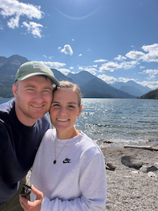

Jackson Moroni Ward | WDD 130

Welcome to the website, I'm Jackson Ward. I've been married to my lovely wife Kaytie for 9 years.
Our two year old son loves to keep us entertained with chasing planes, trucks and helicopters.
We love being in the mountains: throwing rocks, hiking and snowboarding.
I enjoy playing and designing boardgames, driving on roadtrips and good movies and tv shows.